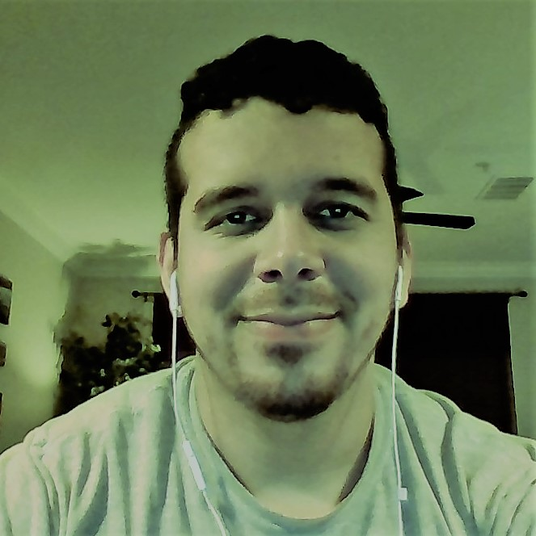

About Me

Hello there! First the boring stuff... I was born and raised in the Atlanta area. I graduated from Georgia State University with a Comp Sci degree. My focus was on human computer interaction & graphics so I didn't do much code. I had a few coding classes but after graduating I didn't put any of it to practice. After school I started working in software quality assurance and have now been doing that for over 4 years. I'm currently part of the GATech Coding Bootcamp because I want to sharpen my technical skills and become a web developer!
...And now the fun stuff. I might be SUPER serious when you first meet me, but soon after you'll discover I'm actually SUPER silly. I like to joke around and I'd say I have a great sense of humor. I'm a pretty laid back dude so you'd have to be a huge jerk to offend me. I enjoy hiking and try to do so whenever I get the chance. I really enjoy gaming on my PC or PS4 and have recently gotten into VR gaming which is quite a trip! As far as music goes I listen to various genres but mostly rock & metal. I used to hang out quite a bit in East Atlanta Village, and still enjoy making a trip down from time to time. Feel free to reach out if you want to know more! Dueces!